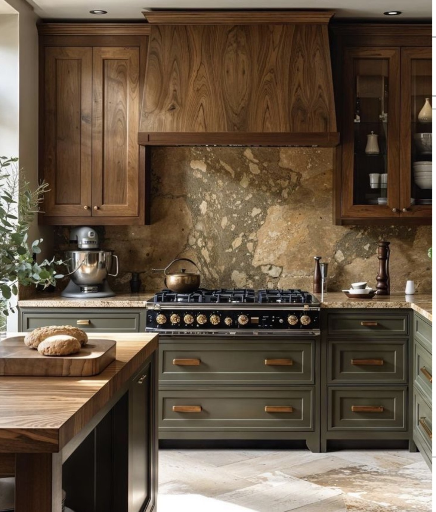
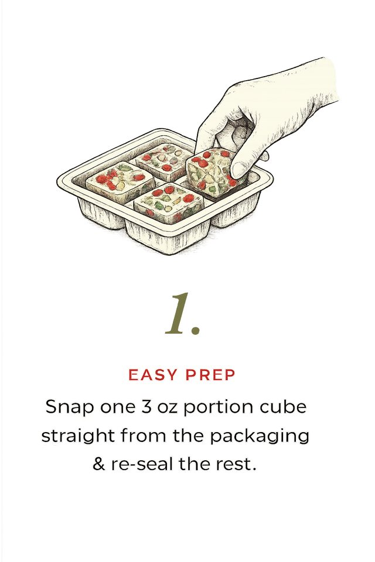
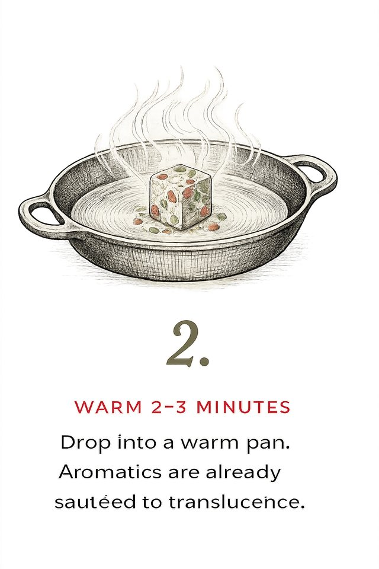
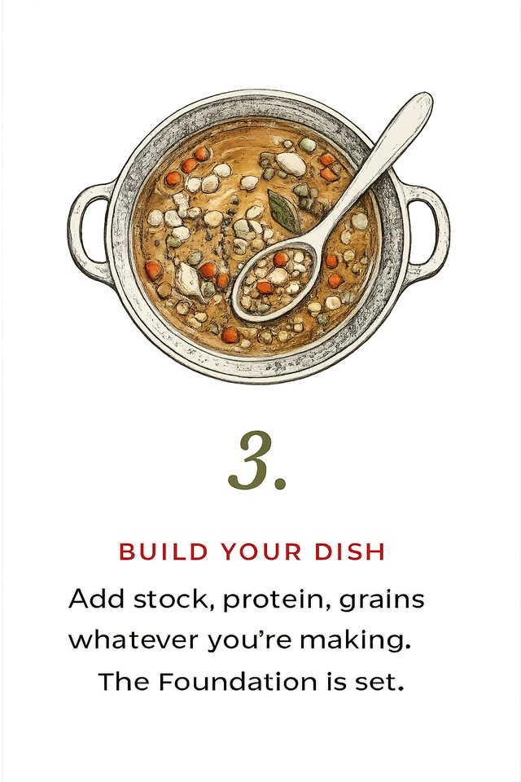

Maillard™ · Culinary Foundations
Delegate the prep;own the moment.
We finish the first fifteen minutes of any recipe — onion, carrot, celery brought to translucence in olive oil and sea salt, pre-portioned and frozen at peak. You build from a foundation of craft, even on hour ten of a long day.

How it works
From freezer to flavor in three steps.



The family · Five foundations
One standard of care, five ways to begin.
“The cook on hour ten of a long day deserves the same depth of flavor as anyone with an afternoon to spare.”
“Military service taught me care is preparation.”
Maillard began in an ordinary kitchen, on an ordinary weeknight — from a simple wish that a good meal could still come together when the day has already worn you out. So we take care of the part that drains you, and leave the cooking — the part worth keeping — to you.
Read our storyOur Story
How one overfilled pot became a company.
I love feeding people well. What I never loved was the prep. For the longest time, I was dicing aromatics every night. Every. Night.
Then one evening I got a little zealous with the chopping — lost in thought, knife on autopilot — and ended up with far more mirepoix than the pot needed. I froze the extra. Days later, soup night: I opened the freezer and dinner was already started. Same soup. Same smell filling the kitchen. None of the tears.
That was the whole idea. So I started making foundations on purpose — sautéed slowly, portioned honestly, frozen at their peak. First for my family, then for friends, now in small batches at a licensed New Jersey kitchen.
My time in the Air Force and raising a family taught me the same lesson: care is preparation. Good ingredients, prepared with intention, are how we take care of each other — and the table is where it shows.
Thank you for letting us start dinner with you.
— Elizabeth & the Based In Good family
Find Us
Meet us at the market.
Online ordering is on its way. For now, the best way to get Maillard — and to say hello — is in person.
Haddonfield Farmers Market
2 Kings Court · Haddonfield, NJ 08033 · Saturdays · 8:30am–1:00pm
Want a foundation set aside? Email to reserve for any market date — pay at the table.
At our table
What you’ll find.
Each foundation is $13 — 12 oz, four pre-portioned 3 oz segments. Use one, re-seal the rest.
Say hello
Questions are always welcome.
Whether it’s how to use a foundation, what’s in it, where we’ll be next, or setting one aside for a market date — write anytime. Elizabeth answers.
Emailthekitchen@maillardfoundations.com
Instagram@mrsmirepoix
Recipes
Start from a foundation. Build something yours.
Every recipe begins with one Maillard™ cube. The rest is your imagination.